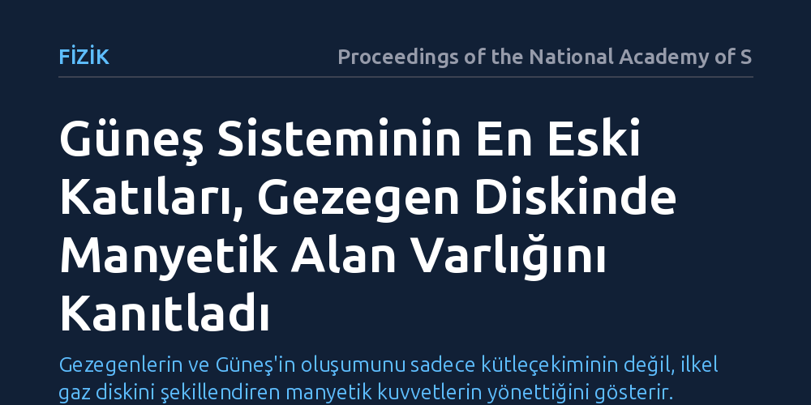

FIZIK · Proceedings of the National Academy of Sciences · 2026-09-12
Araştırmacılar, Güneş sisteminin ilk oluşan katı maddeleri olan kalsiyum-alüminyumca zengin inklüzyonları inceleyerek ilkel gezegen diskinde manyetik alan bulunup bulunmadığını araştırdı. Yapılan paleomanyetik ölçümler, bu en eski parçacıkların oluşumu sırasında gezegen öncesi bulutsuda aktif bir manyetik alanın var olduğunu ortaya koydu.
Gezegenlerin ve Güneş'in oluşumunu sadece kütleçekiminin değil, ilkel gaz diskini şekillendiren manyetik kuvvetlerin yönettiğini gösterir.

Güneş sistemimiz yaklaşık 4,6 milyar yıl önce devasa bir gaz ve toz bulutunun kendi içine çökmesiyle oluşmaya başladı. Çöken bu bulut, merkezde genç Güneş'i, çevresinde ise dönen düz bir ön gezegen diskini meydana getirdi. Ancak astrofizikçilerin uzun süredir çözmeye çalıştığı temel bir bilmece vardı: Diskteki devasa gaz ve toz kütlesi nasıl olup da dönme hızını kaybedip merkezdeki yıldıza akabildi ve geride gezegenleri oluşturacak kararlı bir yapı bıraktı?
Maddenin içe doğru hareket edebilmesi için açısal momentumun dışarıya aktarılması gerekir. Yalnızca kütleçekimi ve sıradan gaz sürtünmesi bu süreci açıklamakta yetersiz kalmaktadır. Bilim insanları, diski delen ve yönlendiren güçlü manyetik alanların bu dönüşümü sağlamış olabileceğini öne sürüyordu; fakat ilk evrede böyle bir manyetik alanın gerçekten var olup olmadığına dair somut fiziksel kanıtlara ihtiyaç duyuluyordu.
Erken Güneş bulutsusundaki koşulları gözlemlemek için zamanda geriye gitmek mümkün olmasa da uzaydan düşen ilkel göktaşları mükemmel birer zaman kapsülü işlevi görür. Karbonlu kondrit tipi göktaşlarının içinde yer alan ve kalsiyum-alüminyumca zengin inklüzyonlar olarak adlandırılan açık renkli tanecikler, Güneş sisteminde tarihlendirilebilen en eski katı maddelerdir. Bu parçacıklar, genç Güneş'e çok yakın ve aşırı sıcak ortamlarda ilk katılaşan maddeler arasında yer alır.
Araştırmacılar, bu kadim inklüzyonların laboratuvarda manyetik hafızasını okuma yoluna gitti. İnklüzyonların içindeki manyetik mineraller yüksek sıcaklıktan soğurken, o sırada çevrede bulunan manyetik alanın yönünü ve şiddetini adeta bir banta kaydeder gibi içlerine hapseder. Bilim insanları hassas manyetometreler yardımıyla, bu numunelerin sonraki çarpışmalardan etkilenmemiş korunaklı çekirdeklerindeki kalıntı mıknatıslanmayı ölçtü.
Yapılan ayrıntılı paleomanyetik testler, kalsiyum-alüminyumca zengin inklüzyonların oluştukları ve soğudukları sırada kayda değer bir bulutsu manyetik alanına maruz kaldıklarını gösterdi. Numunelerden elde edilen manyetik sinyal, göktaşının daha sonraki uzay yolculuğunda veya Dünya'ya girişinde kazandığı ikincil bir etki değil; doğrudan ilk katılaşma evresinde kaydedilmiş özgün bir termal kalıntıydı.
Bu ölçümler, gezegen öncesi gaz ve toz diskinin daha ilk anlarından itibaren manyetik kuvvetlerle sarılı olduğunu netleştirdi. Böylece ilkel disk içindeki manyetik alanın varlığı, kuramsal astrofizik modellerinin bir varsayımı olmaktan çıkıp, Güneş sisteminin en eski katı nesnelerinde somut bir kanıta kavuşmuş oldu.
Bu bulgu, gezegen sistemlerinin oluşumunda manyetik alanların ikincil bir ayrıntı değil, ana yönlendirici kuvvet olduğunu ortaya koyuyor. Güçlü bir bulutsu manyetik alanı, diskin merkezindeki genç yıldıza madde akışını hızlandıran manyetik rüzgarları çalıştırmış ve gaz kütlesinin doğru zamanlamayla tahliye edilmesini sağlamıştır. Bu mekanizma işlemeseydi, gezegenlerin yörüngeleri bugünkü kararlı düzenine kavuşamayabilirdi.
Dünya gibi kayalık gezegenlerin ortaya çıkışı, Güneş'in ilk evrelerinde bu manyetik süreçlerin kusursuz işlemiş olmasına dayanıyor. Çalışma, Güneş sistemimizin bebeklik dönemine ışık tutmanın yanı sıra, galakside keşfedilen binlerce ötegezegen sisteminin nasıl evrimleştiğini anlamak için de sağlam bir zemin hazırlıyor.